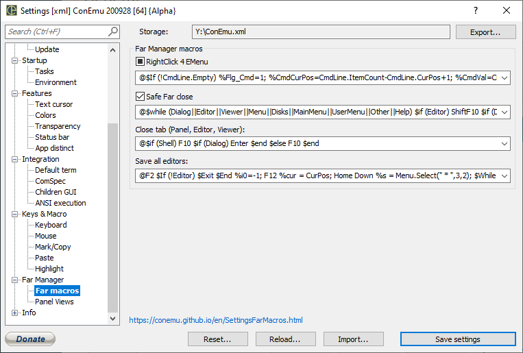

RightClick 4 EMenu Off - all RClicks passed to console On - EMenu called instead of RClick 3rd-state - Short RClick passed, Long RClick -> EMenu Warning! This may conflict with RDrag
Far Manager macro for EMenu of file panel selected items Clear field to reset to defaults
Safe Far close Try to close Far Manager softly, instead of closing console window, when you close ConEmu window
Macro for close Far Manager softly, instead of closing console window, when you close ConEmu window Clear field to reset to defaults
Close tab (Panel, Editor, Viewer) Macro for close Editor/Viewer/Panels in Far Manager, when you choose ‘Close’ from tab context menu Clear field to reset to defaults
Save all editors Macro for saving all opened Far Manager modified editors, when you choose ‘Save all’ from tab context menu Clear field to reset to defaults